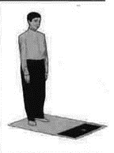
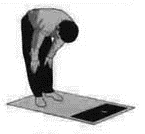
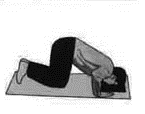
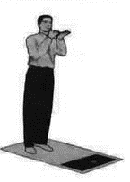
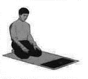

Namaz vaxlarını görmək
üçün tarix seçin
| Azan | İqamə |
|---|---|
|
|
| Namazın qılınma ardıcıllığı | Namazın sözləri | Namazın qılınması (şəkillərlə) |
|---|---|---|
2 rükətli namaz
|
Fatihə surəsi:
İxlas surəsi:
Təşəhhüd:Əlhəmdu lillah. Əşhədu ənla ilahə illəllah, vəhdəhu la şərikə ləh. Və əşhədu ənnə Muhəmmədən abduhu rəsuluh. Allahummə salli əla Muhəmmədin və ali Muhəmməd. Salamlar:Əssəlamu əleykə əyyuhən-nəbiyyu və rəhmətullahi və bərəkatuh. Əssəlamu əleyna və əla ibadillahis-salihin. Əssəlamu əleykum və rəhmətullahi və bərəkatuh. Təşbihati ərbəə:Subhanəllahi vəlhəmdulillahi və la ilahə illəllahi vallahu Əkbər (3 dəfə). Niyyət: <<.....>> namazı qılıram vacib qurbətən iləllah Təkbir: Allahu Əkbər Rüku: Sübhanallah (3 dəfə) Səcdə: Sübhanallah (3 dəfə) Qunut: Allahummə səlli əla Muhəmmədin və Ali-Muhəmməd. (3 dəfə) |
QiyamRükuSəcdəQunutTəşəhhüd və salamlar |
Diqqət
|
||